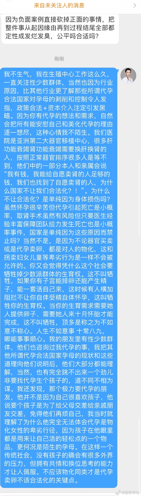

代孕这类话题，还是医生们说得最清楚。教育程度高逻辑清楚，看过太多实例了解人性。赞
@医学手札:
这是我近期最后一次说这个话题，之后我就要恢复幽默风趣的札氏科普了
我的粉丝里有不少性少数派群体，他们看到我反对代孕卖卵合法化，不少人私信我说很失望，甚至也有辱骂我的。我不生气，我在生殖中心工作这么久，一直关注性少数群体，当然也因为行业原因，比其他行业更了解那些所谓代孕合法国家对孕母的剥削和控制令人发指，高利润+需求旺盛+政策合法+资本逐利注定引发黑暗。
因为你有代孕的想法和需求，自然会把所有能安慰自己和美化代孕的理由逐一想尽，这种心情我不陌生。我们医院是亚洲第二大器官移植中心，很多肝功能衰竭肾功能衰竭需要换肝换肾的人，按照正常器官排序很多人是等不到，他们中的一部分本人和亲属会说“我有钱，我能给自愿卖肾的人足够的钱，我们也找到了自愿卖肾的人，为什么国家不让我们合法化？！”。
为什么不让合法化？是单纯因为对供体的身体损伤吗？虽然怀孕很辛苦但代孕引起死亡也是小概率，取肾手术虽然有风险但只要医生经验丰富保障团队给力发生死亡也是小概率事件，国家是单纯因为这些原因而禁止吗？当然不是，是因为不论器官买卖或是代孕卖卵，都是对人的物化，这和拐卖妇女儿童等卑劣行为是一样不会被允许的。
你又会觉得凭什么这个社会要牺牲掉少数派群体的生育权。首先，这真不叫牺牲，如果你有子宫能排卵还能产生精子，能一套活自己来，这时候有人横加阻拦不让你自体受精自体怀孕，这叫牺牲你的生育权。当你的生育需求需要她人提供卵子、需要她人来十月怀胎才能完成，这不叫牺牲，顶多是称之为不如意不称心。
人生不如意事 十有八九，哪能事事顺心。
我的朋友里有性少数群体，他们也咨询过我代孕的事，我把其他所谓代孕合法国家孕母的现状和这些道理向他们说明后，他们大部分都能理解，当然，也有完全跳不出来一个劲儿非要找代孕生个孩子的，道不同不相为谋。
我还发现，那些极力要代孕的朋友，他并不是因为自己很喜欢孩子，他说要个孩子是为了给父母交差给亲戚朋友交差，免得他们再烦自己，我当时就理解了为什么他完全无法体会代孕是物化女性的卑劣行径，因为孩子在他眼里都是用来让自己活的轻松点的一个物品，更何况是陌生的孕母。
在这样一个传统社会，没有孩子的确会有很多外界的压力，但拥有共情和换位思考的能力才让人佩服，当然，你可以选择活得自私。
最后点题：不应该也不允许物化同类才是代孕卖卵不该合法化的关键点。
#微博健康讲堂# 札老师说
札老师说
我的粉丝里有不少性少数派群体，他们看到我反对代孕卖卵合法化，不少人私信我说很失望，甚至也有辱骂我的。我不生气，我在生殖中心工作这么久，一直关注性少数群体，当然也因为行业原因，比其他行业更了解那些所谓代孕合法国家对孕母的剥削和控制令人发指，高利润+需求旺盛+政策合法+资本逐利注定引发黑暗。
因为你有代孕的想法和需求，自然会把所有能安慰自己和美化代孕的理由逐一想尽，这种心情我不陌生。我们医院是亚洲第二大器官移植中心，很多肝功能衰竭肾功能衰竭需要换肝换肾的人，按照正常器官排序很多人是等不到，他们中的一部分本人和亲属会说“我有钱，我能给自愿卖肾的人足够的钱，我们也找到了自愿卖肾的人，为什么国家不让我们合法化？！”。
为什么不让合法化？是单纯因为对供体的身体损伤吗？虽然怀孕很辛苦但代孕引起死亡也是小概率，取肾手术虽然有风险但只要医生经验丰富保障团队给力发生死亡也是小概率事件，国家是单纯因为这些原因而禁止吗？当然不是，是因为不论器官买卖或是代孕卖卵，都是对人的物化，这和拐卖妇女儿童等卑劣行为是一样不会被允许的。
你又会觉得凭什么这个社会要牺牲掉少数派群体的生育权。首先，这真不叫牺牲，如果你有子宫能排卵还能产生精子，能一套活自己来，这时候有人横加阻拦不让你自体受精自体怀孕，这叫牺牲你的生育权。当你的生育需求需要她人提供卵子、需要她人来十月怀胎才能完成，这不叫牺牲，顶多是称之为不如意不称心。
人生不如意事 十有八九，哪能事事顺心。
我的朋友里有性少数群体，他们也咨询过我代孕的事，我把其他所谓代孕合法国家孕母的现状和这些道理向他们说明后，他们大部分都能理解，当然，也有完全跳不出来一个劲儿非要找代孕生个孩子的，道不同不相为谋。
我还发现，那些极力要代孕的朋友，他并不是因为自己很喜欢孩子，他说要个孩子是为了给父母交差给亲戚朋友交差，免得他们再烦自己，我当时就理解了为什么他完全无法体会代孕是物化女性的卑劣行径，因为孩子在他眼里都是用来让自己活的轻松点的一个物品，更何况是陌生的孕母。
在这样一个传统社会，没有孩子的确会有很多外界的压力，但拥有共情和换位思考的能力才让人佩服，当然，你可以选择活得自私。
最后点题：不应该也不允许物化同类才是代孕卖卵不该合法化的关键点。
#微博健康讲堂#
- 